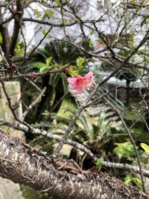

うるがいの話 ある日
最新: ネットラジオうるがいとは 前提知識です
カニの画像をクリックすると『うるがいの話』サイトを表示します|
|
【うるがいの話】 うるがい(ｳﾙｶﾞｲ urugai)とは、『もずくがに』の名前でとても大きくなります。 |
|---|---|
|
|
【Got cat カミマヤーの話】 たながー（ﾀﾅｶﾞｰtanagaa）とは手長えびのことで、何種類かあり大きいのは車 エビぐらいになります。 |

|
【ぶながぁの話】 ぶながー(bunagaa)とは、赤い髪の毛、赤い身体、そして身長は１ｍ２０ｃｍ ぐらい、川の蟹を食べているの目撃された。場所は沖縄県国頭郡大宜味村のと ある村僕の隣近所に住んでいる爺さんから、聞いた話です。 |
|
|
【ギーマの話】 ギーマ(giima)とは、山原の里山に咲くスズランに似た、 花を付けます。実は食べられます、 気が付くと口の周りが紫になっています。 |
2021年11月09日 (火）ネットラジオ
16:07

昨日、トヨタの販売店で契約手続きをしようと、クリアファイルに閉じた資料
を取り出そうとしたとき、誤ってクリアファイルの角を右目（メガネは外して
いた）に当ててしまった。痛っ！、え、また右目か・・・。右目は視力が落ち
ている。家に帰ると眼科で先々週もらった目薬をさす、それでもなかなか、痛
みはとれない。夜には、改善の見込みがないので９時前から横になり、目を閉
じることにした。目が使えないので、ネットラジオをひたすら聴いて過ごす。
１２時前になると痛みがおさまってきたので、少し本を見る事にした。だめで
ある、１０分程するとまた痛みが、目薬をさし諦めて寝る。心配していたが朝
になると痛みは治まっていた。なんなんだろう、この不手際は、ま、だんだん
もうろくしてきているのだろう。それにしても、もしかして目が疲れないよう
にラジオの時間を設けなさい！と、何かの指示なのだろうか。そうするか。